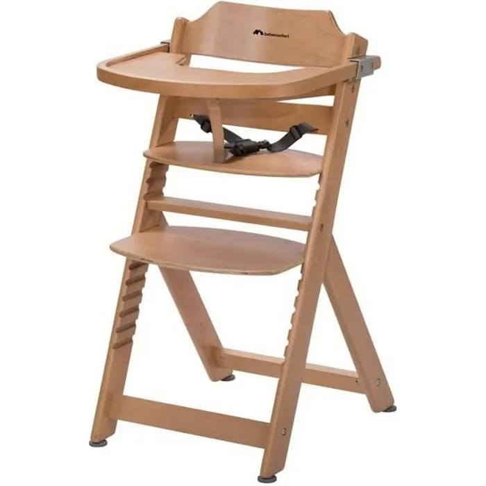

Chaise Haute Évolutive (Bois)
- État : Excellent
- Matériau : Bois non traité
- Réglable en hauteur
- Convient de 6 mois à 6 ans
Matériau durable et sain pour votre enfant. Facile à nettoyer et à intégrer dans tous types d’intérieurs.
Matériau durable et sain pour votre enfant. Facile à nettoyer et à intégrer dans tous types d’intérieurs.